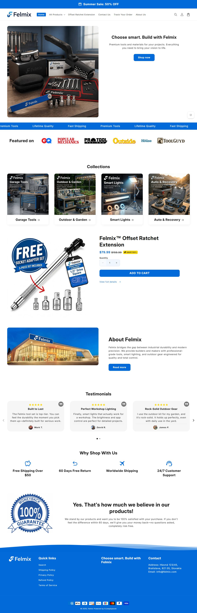
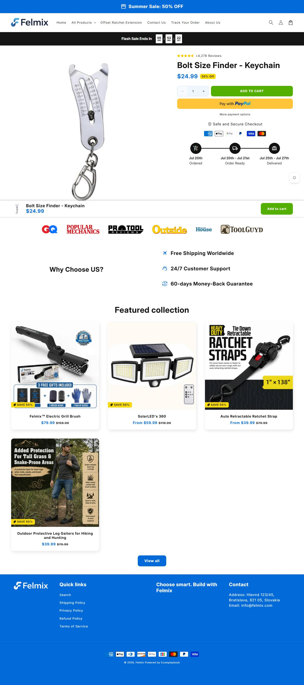

Operação menor e mais recente. 12 ativos / 175 histórico. 'When Your Impact Won't Fit' — mesmo produto core do nicho.
Ângulo 'quando seu impacto não cabe' — o mesmo problema de acesso, dito pelo lado da ferramenta pneumática.
| Produto | Preço |
|---|---|
| When Your Impact Won't Fit (offset/tight-space tool) | $? |
Momentum da operação: estavel (de Tranco + sobrevivência de criativo + idade do campeão)


Contar anúncio diz quem ganha; isto diz por que ganha, que é o que se copia. Decodificado dos criativos e do funil coletados.
| Big idea / ângulo | 'Quando seu impacto nao cabe' - o mesmo acesso apertado pelo lado da ferramenta pneumatica. |
| Mecanismo único | Offset/tight-space tool. |
| Formato de hook | 'When Your Impact Won't Fit'. |
| Estrutura do presell | Loja pequena, imagens IA (Gemini), Judge.me. |
| Objeção principal | nao decodificada (comentarios nao raspados) |
Player pequeno testando o mesmo core. Útil como confirmação de que o nicho atrai novos entrantes toda semana, mas sem escala pra modelar.
| Eixo (0–2) | Pontos |
|---|---|
| Sourcing simples | 2/2 |
| Ticket fecha sem escada complexa | 2/2 |
| Criativo simples de produzir | 2/2 |
| Mecanismo com urgencia | 2/2 |
| Investimento de entrada baixo | 2/2 |
| Sem dependencia de autoridade | 1/2 |
| Total | 11/12 |
Operacao pequena e simples, produto unico, criativo IA (Gemini). Acessivel a iniciante.